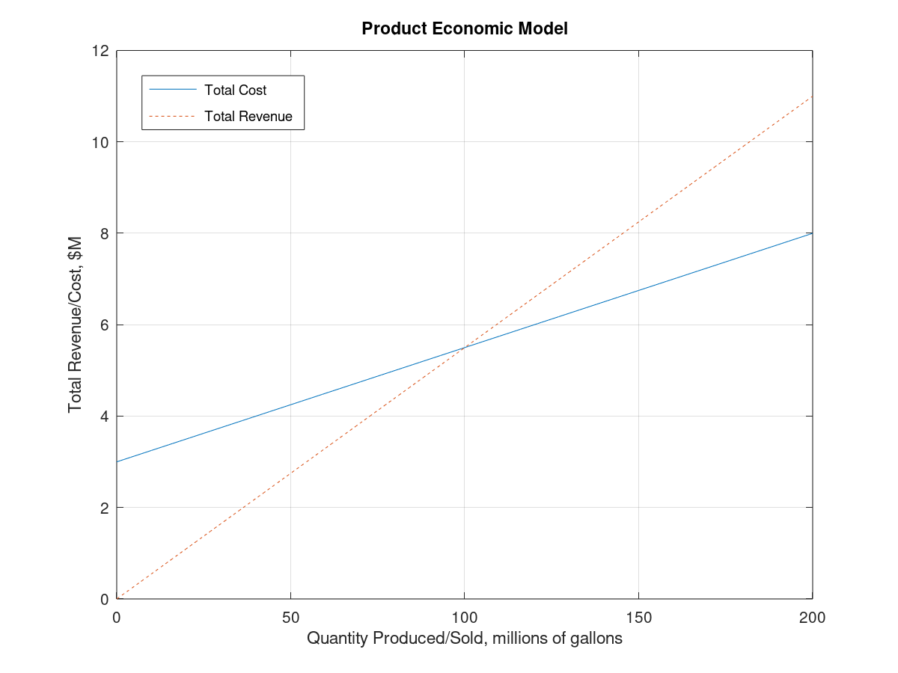
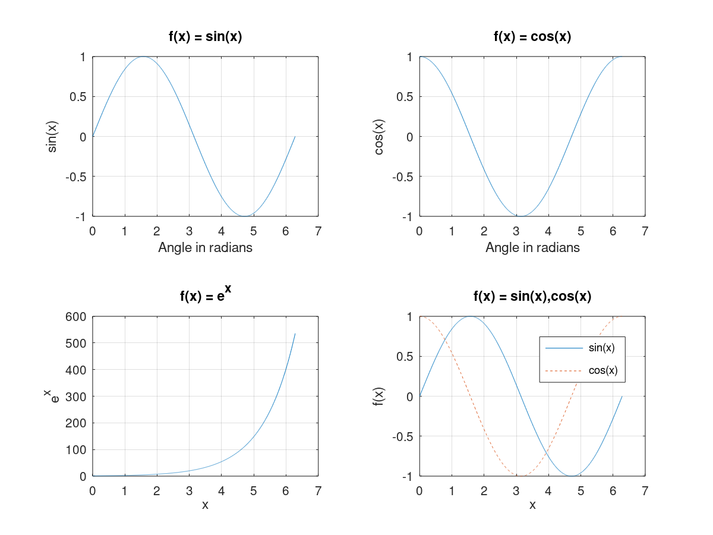
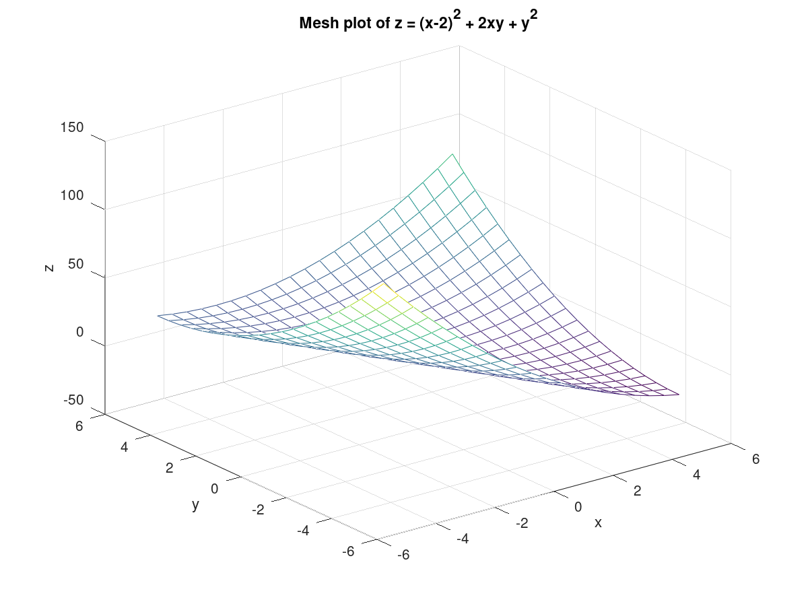
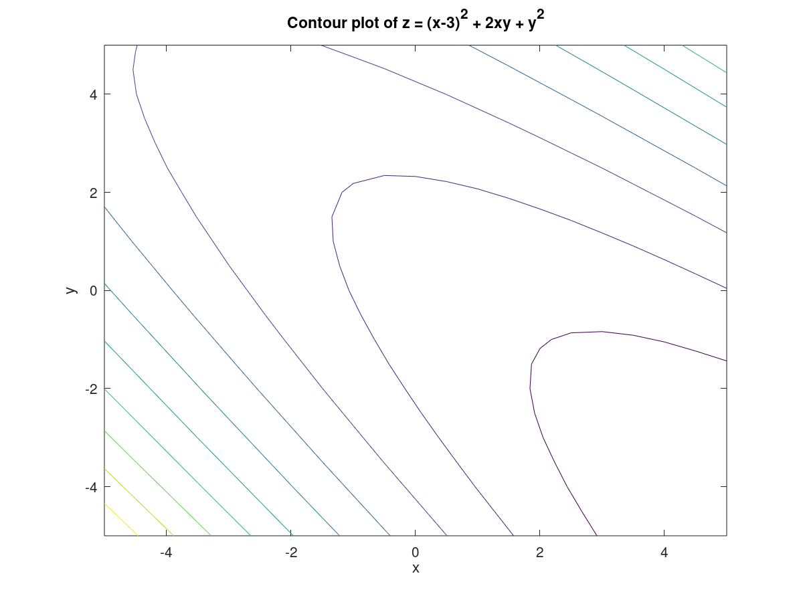
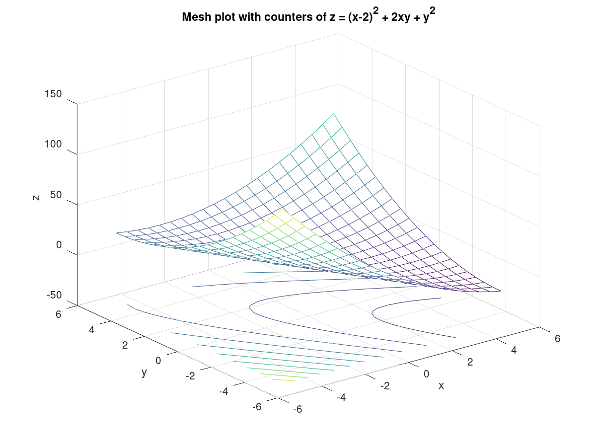

Authored by: Andres Choque Authored on: 9/26/2020
close clear all clc % Problem Presentation %{ We are asked to construct a breakeven plot for producing and selling a chemical product. We are given values for fixed cost (FC), variable cost (VC), quantity (Q), and unit selling price (P). We want to know the breakeven point, the range of profitable production, and the quantity of product that produces maximum profit. %} % Initialize variables FC = 3; % Fixed Cost in $M per year VC = 2.5; % Variable cost in cents per gallon produced P = 5.5; % Selling Price in cents per gallon sold Q = [0:200]*1e+6; % Quantity produced/sold in million of gallons per year % Perform Calculations TC = FC + Q*VC*1e-8; % returns in Total Cost (TC) per year in $M TR = Q*P*1e-8; % returns Total Revenue (TR) per year in $M Profit = TR - TC; % returns Profit per year in $M [zero idx] = min(abs(Profit)); % returns array index minimum abs(Profit) BEP = Q(idx); % return Breakeven point in millions of gallons per year % Display results plot(Q*1e-6,TC,Q*1e-6,TR,'--') title('Product Economic Model') xlabel('Quantity Produced/Sold, millions of gallons') ylabel('Total Revenue/Cost, $M') legend('Total Cost','Total Revenue','location','northwest') grid on fprintf('The breakeven point occurs at %3.0f million gallons.\n\n',BEP*1e-6) fprintf('Operations are profitable above this point.\n\n') fprintf('There is no upper limit on profitability.\n\n')
The breakeven point occurs at 100 million gallons. Operations are profitable above this point. There is no upper limit on profitability.
close all clear clc % Problem Presentation %{ we are asked to construct a 2 by 2 grid of plots showing sin(x), cos(x), e^x, and both sin(x) and cos(x) on one subplot. We must include elements to create proper plots. %} % Initialize variables x = linspace(0,2*pi,1000); % Creating an array of 1000 equally spaced points from zero to 2*pi sin_x = sin(x); % Creating an array of sine values cos_x = cos(x); % Creating an array of cosine values exp_x = exp(x); % Creating an array of exponential values % Perfrom Calculations ... there are no additional calculations needed % Display results subplot(2,2,1) plot(x,sin_x), title('f(x) = sin(x)'), grid on xlabel('Angle in radians'), ylabel('sin(x)') subplot(2,2,2) plot(x,cos_x), title('f(x) = cos(x)'), grid on xlabel('Angle in radians'), ylabel('cos(x)') subplot(2,2,3) plot(x,exp_x), title('f(x) = e^x'), grid on xlabel('x'), ylabel('e^x') subplot(2,2,4) plot(x,sin_x,x,cos_x,'--'),title('f(x) = sin(x),cos(x)'),grid on xlabel('x'), ylabel('f(x)'), legend('sin(x)','cos(x)')
close all clear clc % Problem Presentation %{ we are asked to produce a set of figures that shows a mesh plot on top, followed by the counter plot, and then the meshc plot at the bottom. %} % Initialize variables [X,Y] = meshgrid(-5:0.5:5); % Defining the xy grid of interest Z = (X-2).^2 + 2*X.*Y + Y.^2;; % Defining the Z = f(X,Y) array % Perform calculations ... there are no additional calculations needed % Display results mesh(X,Y,Z),xlabel('x'), ylabel('y'), zlabel('z') title('Mesh plot of z = (x-2)^2 + 2xy + y^2') figure contour(X,Y,Z), xlabel('x'), ylabel('y'), zlabel('z') title('Contour plot of z = (x-3)^2 + 2xy + y^2') figure meshc(X,Y,Z), xlabel('x'), ylabel('y'), zlabel('z') title('Mesh plot with counters of z = (x-2)^2 + 2xy + y^2')